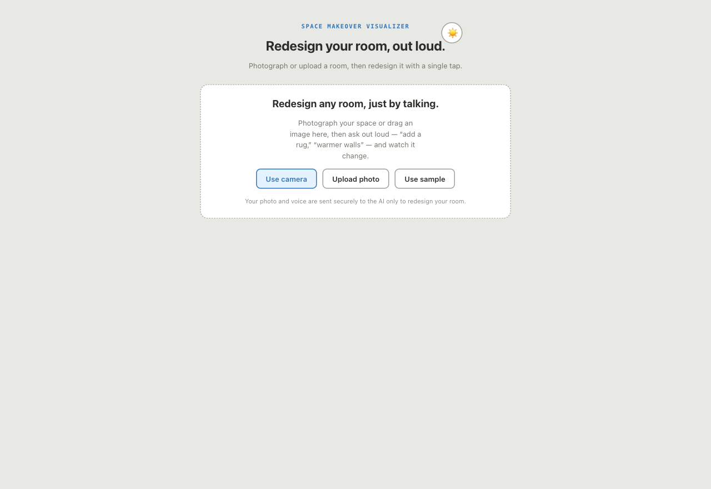
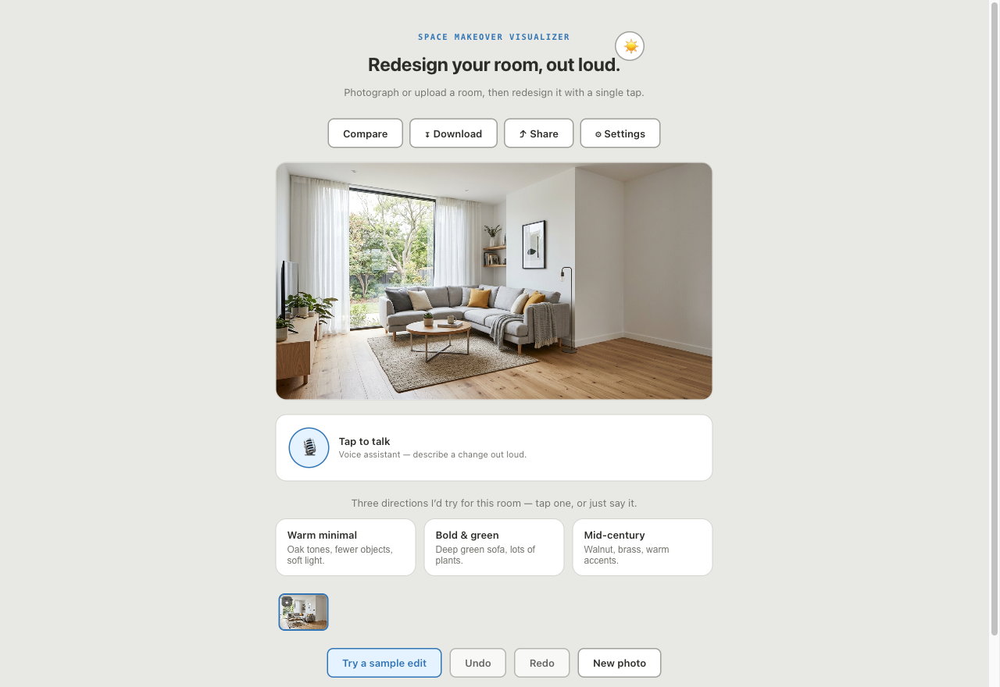
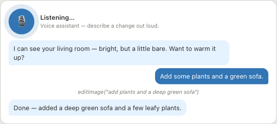
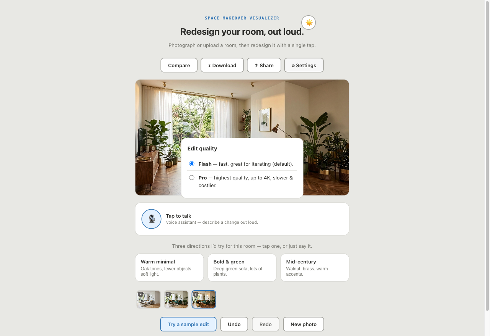
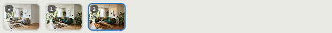
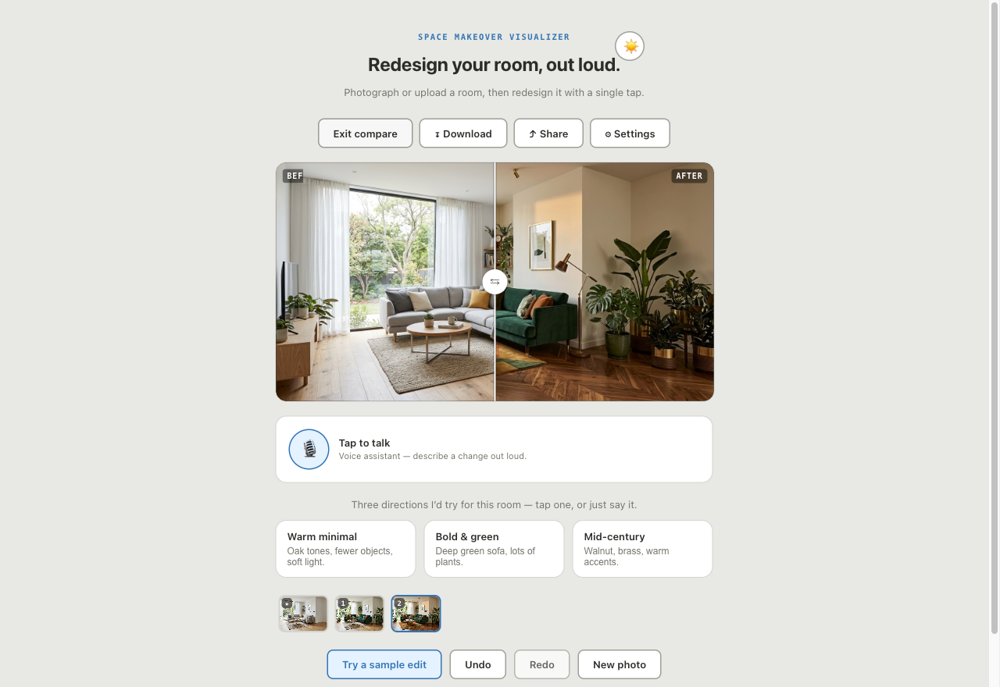
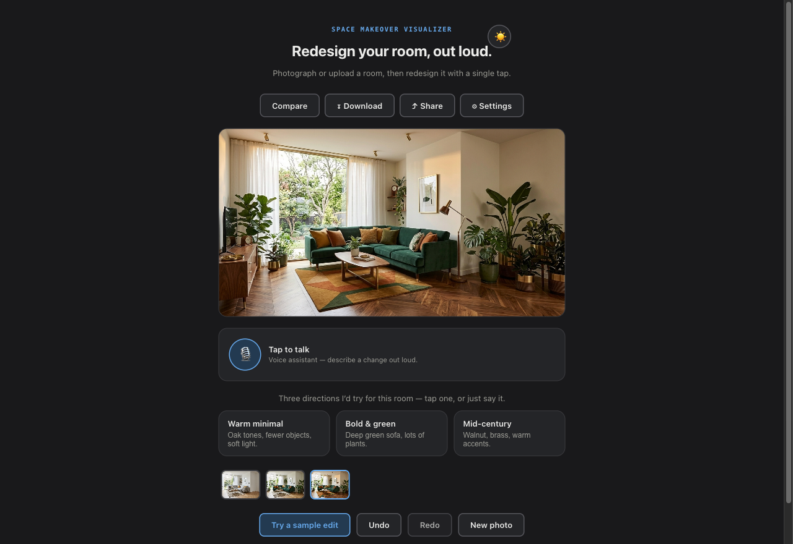
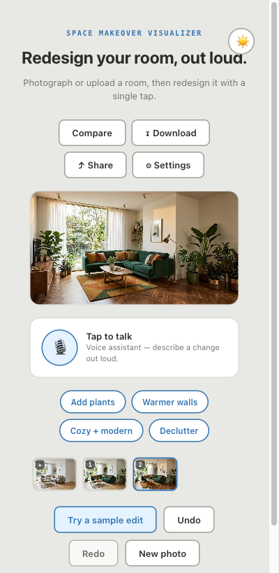
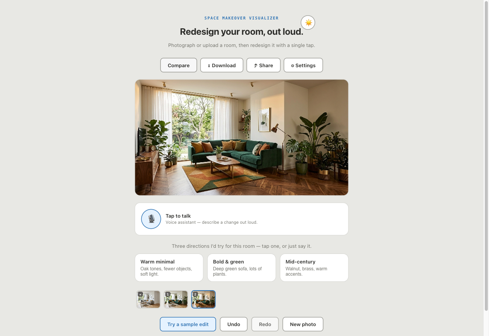

§What it is
A hands-free interior-design tool. You give it a photo of a room; you describe changes out loud (or tap a suggestion); it redesigns the photo and narrates what it did.
Two AI layers work together. A voice agent listens and decides what to change, then calls an image editor to actually transform the photo — adding furniture, swapping materials, changing lighting, decluttering — while keeping the room's geometry and perspective. Every version is saved so you can undo, branch, compare, and download the result.
§Getting started
- Open the app. You'll see the welcome screen with three ways to add a photo.
- Add a room photo — use your camera, upload a file, drag an image in, or tap Use sample to try it instantly.
- Tap the mic and describe a change — e.g. "add a large plant in the corner" — or tap a suggestion.
- Watch it transform. The edit appears in a few seconds and the assistant tells you what changed.
- Keep going — stack more edits, undo, compare before/after, then download or share.
1Add a room photo
The app opens here. Pick whichever source is easiest.

- Use camera — take a live photo (your browser will ask permission the first time).
- Upload photo — choose an image file from your device.
- Drag & drop — drop an image straight onto the panel.
- Use sample — load a ready-made room to explore the app with no photo of your own.
2The workspace
Once a photo is in, everything you need surrounds it. The image stays the star; controls live on a thin edge.

| Region | What it does |
|---|---|
| Top bar | Compare · Download · Share · Settings — always available, never covers the photo. |
| Room image | Your current design. Pinch-zoom / double-tap to inspect details (see below). |
| Voice assistant | The mic toggle, status, and live transcript — your main way to make edits. |
| Suggestions | Quick edits to tap. On wide screens these are richer "direction" cards. |
| Your items | Attach photos of specific furniture, decor, tile, or wallpaper to use in the room. |
| History filmstrip | Every version as a thumbnail; the active one is ringed. Tap to revert. |
| Actions | Try a sample edit · Undo · Redo · New photo. |
Inspect the image: pinch-zoom & pan
On a touch screen, pinch to zoom into the photo and drag to pan; on desktop, double-click to zoom and drag to move. Double-tap (or double-click) again to reset. Zoom resets automatically whenever a new edit appears.
3Talk to the assistant
Tap the mic, then just describe what you want. The assistant can see your photo, so you can be specific or vague.

- Tap the mic to start. The status reads Listening… and a pulsing ring appears.
- Say a change, e.g. "replace the grey sofa with tan leather" or "paint the walls sage green."
- The assistant edits and narrates — the status moves through Editing… → Speaking… and the new image swaps in.
- Tap the mic again to end the session.
Status meanings: Listening hearing you · Editing applying the change · Speaking describing the result.
4Suggestions & directions
Not sure what to say? The app offers ready-made starting points — tap one and it runs immediately.
- Direction cards (desktop) — bigger restyles such as Warm minimal, Bold & green, and Mid-century.
- Suggestion chips (mobile) — quick single changes: Add plants, Warmer walls, Cozy + modern, Declutter.
Each suggestion edits whatever image you're currently on, so you can chain them — start from a direction, then refine by voice.
5Add your own items
Found the perfect armchair online, or a tile sample you love? Attach a photo of it and the app works that exact piece into your room.
- Find the “Your items” panel below the suggestions — it appears once a room photo is loaded.
- Attach up to 4 photos with ＋ Add item photo (you can pick several at once) or by dragging images onto the panel. Furniture, decor, tiles, wallpaper, fabric — anything specific you want in the room.
- Tap “Add to room” to let the AI place the item (or apply the material to the right surface) in the most natural spot — or tell the assistant exactly what you want: “put the armchair from my photo next to the window,” “retile the floor with the tile I added.”
- Remove an item with its ✕ when you're done with it. New photo clears the whole tray.
6Flash vs Pro quality
Open Settings (top bar) to choose how edits are rendered.

| Mode | Best for |
|---|---|
| Flash (default) | Fast, great for iterating quickly while you explore ideas. |
| Pro | Highest quality, up to 4K — a little slower and more costly. Use it for the final render. |
Your choice applies to both voice edits and tapped suggestions. When Pro is on, a hint appears beneath the photo as a reminder.
7History, undo & redo
Every successful edit is saved as a version. Nothing is lost, and your session survives a page refresh.

- Tap any thumbnail to jump back to that version.
- Undo / Redo with the buttons, or ⌘/Ctrl + Z and ⌘/Ctrl + Shift + Z.
- Branch — edit from an earlier version and the timeline forks from that point.
8Before / after
Tap Compare in the top bar to see the original and your current design side by side.

Drag the handle with your mouse or finger, or focus it and use ← / → (and Home / End). Tap Exit compare to return.
9Download & share
Happy with the result? Keep it from the top bar.
- Download — saves the current image to your device as a JPEG.
- Share — on supported devices, opens the native share sheet to send it to Messages, email, etc. Elsewhere it falls back to a download.
§Themes & mobile
The app follows your system light/dark setting, and you can override it with the toggle (top-right).


§Keyboard shortcuts
| Action | Shortcut |
|---|---|
| Undo | ⌘ Z / Ctrl Z |
| Redo | ⌘ Shift Z / Ctrl Shift Z |
| Move compare divider | ← → (and Home / End) |
| Close a popover (Settings) | Esc |
Everything is reachable by keyboard, with visible focus outlines throughout.
§Privacy & offline
Your photo and voice are sent securely to the AI service only to perform the edits you ask for. The app is built so credentials stay server-side — they are never exposed in the page.
The app is installable (a Progressive Web App): add it to your home screen and the interface loads even offline. Making edits still needs a connection, since the AI runs in the cloud.
§Troubleshooting
Problems surface as a brief, non-blocking message at the bottom of the screen — the app keeps working.

| Symptom | What to do |
|---|---|
| Camera or mic permission denied | Use Upload / Use sample, or re-enable permission in your browser's site settings and tap the mic again. |
| "Voice connection dropped" | Tap the mic to reconnect. Your photo and history are unaffected. |
| An edit didn't do what you meant | Undo, then rephrase more specifically (name the object and the change). |
| Want to start over | Tap New photo — it clears the session and returns to the welcome screen. |